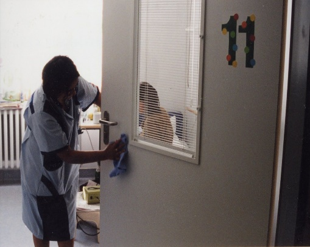
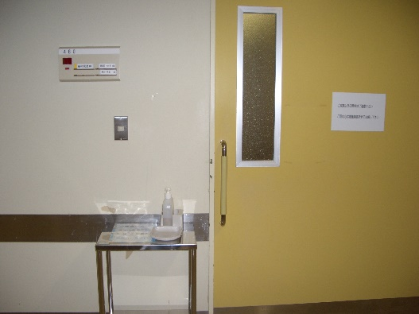
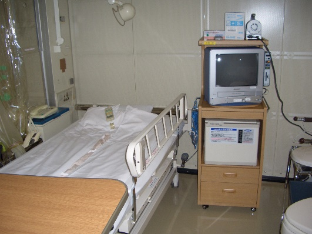
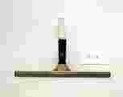

Ⅶ. 院内環境整備
1. 院内清掃
- 患者環境と感染
患者環境の中には、多種多様な細菌が存在している
過剰な対策
以前は
・定期的な環境消毒 ： 消毒剤の噴霧
環境整備時の消毒剤使用
・定期的な環境中の微生物汚染調査
- 壁、床などの表面は通常微生物汚染があるものの、これら環境表面が患者や医療従事者への感染に関わることはまれである。
- 床などは消毒剤を使用することにより一時的に菌量は減少するが、人が存在すれば数時間で元の菌量に戻ってしまう。
環境表面の汚染が手指を介した接触伝播により感染を引き起こす
手指の清潔（手指消毒）の遵守
埃の堆積を最小限に抑えるような環境の清掃
- 清掃の基本的な考え方
- 清掃の主な目的
- 清掃の基本的な考え方
- 患者に快適で安全な療養環境を提供する
- 清掃業務を適切に行うことで、治療と看護がより効果的に行われ、質の良い医療の提供の一環を担う
- 感染経路の遮断をする（手→物→手の接触感染を防止する）
- 医療従事者や病院に携る様々な人に安全で良好な労働環境を保障する
- 建物の維持保全をする
- 清掃時の注意点
環境表面は、患者のケアの間に直接接触しないのでノンクリティカルに分類されている（Spauldingの分類）。環境からの感染をコントロールするためには、環境は洗浄することで十分で滅菌や消毒の必要はなく、手指消毒に加えて汚染させる環境表面への対応、特に「手指の高頻度接触表面」の徹底した清掃が重要となる。
通常細菌は空気中を単独で浮遊するのではなく、埃に付着した状態で浮遊している。そのため、院内清掃においては埃を最小限にすることが重要である。埃を最小限にするための清掃方法・清掃用具の選択が必要である。
環境表面の微生物の数や種類に影響を与える要因
環境における人の数、活動量
湿度
微生物の増殖をサポートする物質の存在
空気中に浮遊している微生物の除去速度
表面のタイプや方向（水平か垂直か）
環境表面の分類
- 医療機器表面
透析装置のノブや取っ手、X線機械、器具カート、歯科ユニットなど
- ハウスキーピング表面
- 手指の高頻度接触表面（frequent hand-contact）
ドアノブ、ベッド柵、電灯のスイッチ、病室のトイレの周辺の壁など
- 手指の低頻度接触表面（minimal hand-contact）
ａ．水平表面；窓敷居やハードフロアの表面など
ｂ．垂直表面；壁、ブラインド、窓のカーテンなど
- 清掃作業前、作業後には必ず石鹸と流水で手を洗う
- 一般病室で無菌操作処置（カテーテル挿入、創処置など）が行われる場合は、30分前までに清掃・カーテン操作を終わらせておく、もしくは処置後に清掃を行う
- 水平面の埃を取り除くには湿式清掃が望ましい
＊水分を含みすぎると環境微生物の繁殖を助長し、かえって清掃の効果が低減するため、適度な絞り具合を考えて行う
- 清拭は１方向にて、汚れをふき取るように行う
- 手がほとんど接触しない部分（床、壁など）は、感染予防対策上、低リスクの範囲に含まれるため、消毒の必要はない
- 手のよく接触する部分（ベッド柵、ドアノブなど）は、1日1回以上、中性洗剤溶液と水で堅く絞ったクロスで入念に湿式清拭を行う
- 清掃の方法
- 病室の清掃
- 清掃の方法
《日常清掃》
ベッドの下など目に触れないところを忘れずに、上から下へ、奥から手前の方へ、部屋の隅々を丁寧に、埃を立てないように行う。清掃時に動かした物は元の位置に戻す。
①部屋のゴミをとる ＊手でゴミを押さない
②高いところの清掃
病室内の天井に近いところ、ドアの上部の埃、桟の埃、壁面の上部の埃、カーテンレールの埃などをクロスで拭き取り目の高さより高いところにある埃をなくす。
＊患者の上の埃取りは決して行わない
＊時計と反対周りに動くなど、１方向に作業を進めることにより手間と時間を節約できる

③水平面の清掃と部分的な清掃水または洗剤を入れた溶液で、床頭台の上やオーバーベットテーブル、電話機、椅子、ベッド柵、ドアノブや電気スイッチなど手指の高頻度接触表面※の湿式清式を行う。
④床の清掃
乾式清拭にてゴミを除去し、その後埃を舞い上げないように静電気を利用した乾式モップで清拭後、湿式清拭を行う。
※高頻度接触表面


床頭台の上、オーバーベットテーブル、電話機、椅子、ベッド柵、ドアノブ、電気スイッチなど《退院時清掃》
①リネン類を片付ける ＊リネンは埃が出るので先に片付ける
②ゴミを取る ＊すべてのゴミやチリなどが無いように片付ける
③高いところの清掃
病室内の天井に近いところ、ドアの上部の埃、桟の埃、壁面の上部の埃、カーテンレールの埃などに加え、通気口の埃を清拭して埃を除去する。
④水平面の清掃
水または洗剤を入れた溶液で、床頭台の上やオーバーベットテーブル、電話機、椅子、ベッド柵、ドアノブや電気スイッチなど手指の高頻度接触表面の湿式清式を行う。同時にロッカーや棚なども清拭する。
⑤床の清掃
乾式清拭にてゴミを除去し、その後埃を舞い上げないように静電気を利用した乾式モップで清拭後、湿式清拭を行う。
部屋の奥から入り口に向かって一方向で清拭する
⑥確認
清拭方向
全ての備品や家具が正しい位置になっているか確認する
《床》
空中に浮遊する埃は概ね30分で床に落下するといわれ、室内の埃の大半が床に存在することになる。そして埃は気流の乱れにより舞い上がることもあるので、常に清潔な状態に維持することが大切である。
《壁》
見た目にきれいであれば乾式による一方向拭きによる除塵でよいが、汚れが確認できる場合は、中性洗剤を使った湿式清掃を行う。

《窓》日常の清掃は堅く絞ったクロスで湿式清掃を行う。定期清掃で広範囲なガラス清掃を行う時は、水、汚れのひどい時は洗剤で清拭した後ガラススクイジーで汚水を除去する。この時サッシも汚水で汚れるため同時に吹き上げる。
ガラススクイジー
- 水まわり
《トイレ、汚物処理室》
①ペーパーを取り替える
②汚物缶のゴミ処理 ＊ゴミをこぼさない
③便器の洗浄
＊棒タワシ、スポンジなどを用い、トイレ用洗剤で洗浄する
＊便器ごとにクロスを交換する
④便器外側の湿式清拭
⑤床の清掃
＊モップは巾木や壁に当てないように湿式清掃する
専用の用具を使用する。シンク、便器などの場所ごとにクロスも専用とする。
トイレは常に多くの人が利用するため、作業終了後すぐに汚されてしまう場所なので、尿石などの汚れを蓄積させないために、丁寧な作業と巡回清掃が重要である。トイレで患者が嘔吐したり下痢などでトイレの周りを汚したりする場合は臨時清掃を行う。
《浴室》
湯垢が残らないように浴室用洗剤を用いてきれいに洗浄する。浴槽内側は跡が残らないように丁寧に洗浄し、カランや蛇口、シャワーヘッドなど手にする部分も洗浄する。
浴室は湿度が高くカビの発生しやすい場所であり常に換気し、1日1回は乾燥させる。特に汚れる隅の部分や、バスカーテンの裏表はカビなど発生させないよう注意する。
《洗面台、手洗いシンク》
シンクは専用の洗剤を用い堅く絞ったクロスで清拭し、水を飛び跳ねさせたりしないように清掃する。水周りは金属部分が錆びやすい条件にあるため、金属の手入れを計画的に実施する。鏡も専用の洗剤を用いクロスで清拭し、石鹸やペーパーなどの備品管理も必要である。
- その他
《廊下》
日常清掃で対象となる汚れは土砂、ほこり、水溶性の汚れである。ほこりは舞い上げないように静電気を利用した乾式モップで１方向に押しながら清拭する。湿式清掃時は濡れた床による転倒防止のために必ず清掃中の表示をする。人や医療機器などにぶつけないように周りに気を配りながら、隅や機器などの下部を丁寧に清拭する。水溶性の汚れにはスポット拭きを行い、案内板や手すりや巾木の上部のほこりにも注意する。壁面などは定期的に除塵を行い、汚れの激しいコーナー部分やスイッチ周りは部分洗浄を行う。
《エレベーター》
狭い空間に多数の人が絶えず出入りする場所であり、ほこりや汚れが目立ちやすく、汚れに応じた作業回数が必要である。床面だけでなく、エレベーターの扉溝に土砂が堆積すると故障の原因にもなるため、床面同様に除塵作業を丁寧に行う。不特定多数の人が接触するボタンのパネル部分は汚れやすいため、１日に数回固く絞ったクロスで湿式清掃する。扉、壁面の汚れはほこり以外に、利用者の頭髪や身体から付着する油性の汚れがあり、人の頭部や臀部の高さあたりに付着するので定期的に洗剤による湿式清掃を行う。
《階段》
エレベーターのある施設では軽視されがちであるが、隅が多く埃がたまりやすい場所である。ほこりは舞い上げないように静電気を利用した乾式モップで１方向に押しながら清拭する。モップは壁にぶつけないようにし、垂直面の清拭も忘れずに行う。また、利用者の通行を妨げないようにし、手すりや窓ガラスの清掃も忘れずに行う。
- 血液や体液の汚染のある場所
0.05～0.0615％次亜塩素酸ナトリウムで消毒
洗 浄
0.5～0.615％次亜塩素酸ナトリウムをしみこませたペーパータオルやガーゼで拭き取る
吸湿性物質(ペーパータオルなど)で肉眼的に見える有機物質を除去→感染性廃棄物容器に捨てる
未滅菌のディスポ手袋着用
未滅菌のディスポ手袋着用
必要な防護具を使用
大きい
小さい(spot)
範囲
床や壁などのハウスキーピング環境が血液や体液に汚染された場合
- 特殊な場所の清掃
＜病院環境のゾーニング＞
空気の清浄度をもとに病院内の区域を分けたものを清浄度ゾーニングという。易感染性患者や感染症患者が同時に生活している病院では、このゾーニングは病院感染防止のための環境整備に重要であり、区域に適した清掃を実施する必要がある。
清掃担当の作業動線が複数ゾーンにわたる場合、清浄度の高いゾーンから最初に清掃作業する。
＜病院環境のゾーニング＞
清浄度クラス | 区域 | 特徴 | 部屋 | |
医療ゾ｜ン | Ⅰ | 高度清潔区域 | 高度な清浄度が要求され、浮遊微生物、温度、湿度、風速、室内圧などを制御することにより清浄度が維持される。周辺室に対して陽圧を維持しており、ヘパフィルターを用いた室内空気の管理をしている。 | バイオクリーン手術室、移植病室 |
Ⅱ | 清潔区域 | Ⅰに次いで高度な清浄度が要求される。 陽圧に維持されている。 | 一般手術室、中央材料部既滅菌室、無菌製剤室 | |
Ⅲ | 準清潔区域 | Ⅱより清浄度は低いが、一般清潔区域より高い清浄度が要求される。Ⅳ以下の区域よりも陽圧に保つ。 | 回復室、ＩＣＵ、ＣＣＵ、ＮＩＣＵ、分娩室、心臓カテーテル検査室 | |
Ⅳ | 一般清潔区域 | 感染症ではない患者、開創状態ではない患者が在室する一般的な区域。 等圧でよい。 | 診察室、一般病室、新生児室、人工透析室、調剤室、理学療法室、Ｘ線撮影室、待合室 | |
Ⅴ | 汚染管理区域 | 有害物質を扱ったり、臭気が発生するため、室内空気が室外へ漏れるのを防ぐ必要がある。 陰圧を維持。 | 細菌検査室、感染症病室、ＲＩ管理区域諸室、患者用便所、使用後リネン室、汚物処理室、解剖室 | |
一般ゾ｜ン | Ⅵ | 一般区域 | 一般的な居室。 等圧でよい。 | 事務室、医局、会議室、食堂 |
Ⅶ | 汚染拡散防止区域 | 臭気、粉塵が発生するため、室内空気が室外へ漏れるのを防ぐ必要がある。 陰圧を維持。 | 一般用便所、ゴミ処理室 |